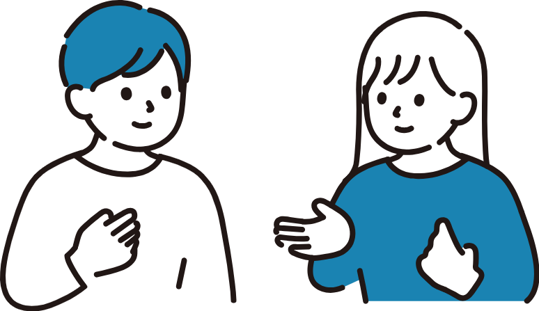
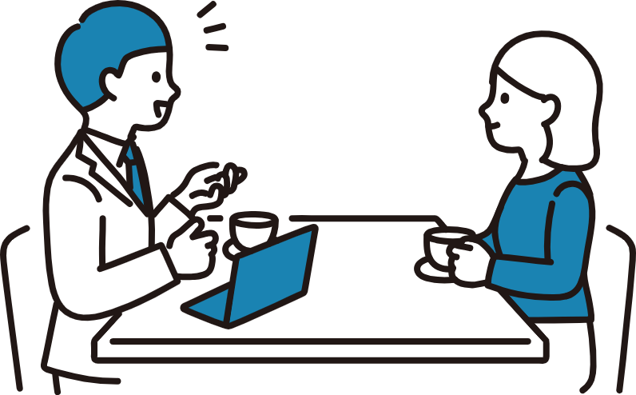
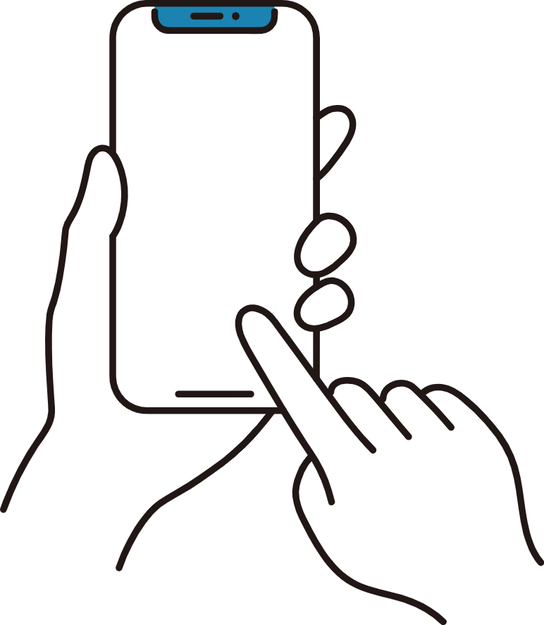

About
私について
Nagayama Yumika
永山 優美香
2000年8月生まれ。茨城県出身。先天性聴覚障害。 前職では、LP・チラシ・Amazon広告などの制作を担当してきました。 デザインの力で、年齢・性別・障がいの有無に関わらず、多くの人が使いやすく、笑顔になれる体験を届けたいと考えています。 将来は、ユーザー一人ひとりに寄り添った設計ができるUI/UXデザイナーを目指しています。
Skill
できること
-

Adobe XD
デザインカンプ・ワイヤーフレーム作成が 可能です
-

Illustrator
文字と画像を組み合わせてレイアウト、 簡単なロゴ制作、文字の服飾が可能です。
-

Photoshop
簡単なトリミング、加工ができます。
-

HTML/CSS
簡単な文書構造や文字・画像の装飾、 レイアウト、レスポンシブ対応ができます。
-

JavaScriput
簡単なアニメーションができます。
Career
経歴
-
2021.03
筑波大学付属聴覚特別支援学校高等部専攻科 ビジネス情報科卒業
-
2021.04
株式会社フレーベル館に新卒で入社
約２年６ヶ⽉間事務職として、⽀社⽀店と代理特約店の問い合わせ対応やデータ⼊⼒を担当。
-
2022.03
デジタルハリウッドSTUDIO by LIGに⼊学
今後のキャリアを考える中でデザイナー職への憧れが捨てきれず、WEBデザインを学べる学校に⼊学。
退勤後や休⽇に動画教材で基礎を学びつつ、グラフィックとWebサイトを制作。 -
2022.09
デジタルハリウッドSTUDIO by LIGを卒業
-
2023.10
事務職からプロモーション職へ部署異動
異動希望でプロモーション開発チームに異動し、LPとバナー、チラシ制作を担当。
-
2025.09
フレーベル館株式会社 退職
-
2025.12
就職活動
今後はUI /UXデザイナーとしてキャリアを積んでいきたいと考え、就職活動中。
Deaf
耳について
私は、先天性感音性難聴を持っています。 聞こえを補うために右耳に人工内耳を装用して、 コミュニケーションを取り日常生活を送っています。
コミュニケーション
①手話
-

人工内耳を装用していない場合は、両耳とも全く聞こえません。そのため、手話でコミュニケーションを取っています。
②会話
-

右耳に人工内耳を装用しているときは、右耳から話していただければ、ほぼ内容を把握することができます。
左耳は未装用で全く聞こえないため、右耳から話していただけると嬉しいです。
③文字起こし
-

完璧に聞き取ることが難しいため、スマホやチャットなどで自動文字起こし変換していただく場合もあります。